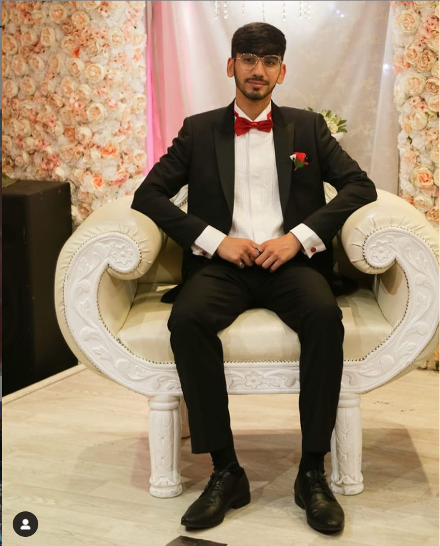

|  |
Hey my name is Muhammad Noufil Sulehri. I am 20 years old and I am aspiring to become a popular streamer as well as work on my computing projects. I am from Pakistan and I moved to the UK in 2009. While I was new to the country and speaking English was difficult to me, I was able to adjust and worked hard to improve. I got interested in making games when I played the very popular game called "Minecraft". Playing Minecraft gave me the drive to make my own games in the future. However, even though I had given up on devoloping games, when I reached A levels I became interested in doing Accounting instead. However, after one year spent at Roehampton University, I decided that Accounting is not something I would want to make a career out of compared to Computer Science. Almost on a whim, I changed my course last minute and now I go to Goldsmiths University. Doing Computer Science at Goldsmiths is a good decision on my behalf as I am enjoying it and learning how to do things that bring me more joy than Accounting did. In my first year of uni, I created a game which resembled the well known 'damsel in distress' story. I took inspiration from similar games, for example, Mario type games, to constantly develop it into a new and improved self-made game. I hope to make better games in the future with big companies such as Epic Games or Blizzard. Mojang is also one of the big companies I would like to work for as these companies have made the games I grew up playing. My Favourite games to play are Overwatch, Apex Legends, Minecraft and Valorant. I enjoy playing Call of Duty as well as Fortnite. Ever since I was a child I grew up playing games. From my PS2 days to my PC days. They have helped me progress from a child to a full feldged adult. I hope to inspire kids like me to make games and have the best time possible. My personal interests include streaming and playing games but are not limited to as I also take part in competitive sports like Football and I enjoy animating on Blender. I hope to make more content as a streamer and youtuber one day but for now I will continue working as a freelance games developer. Check out my projects page! I hope you enjoy your stay on my first website! |